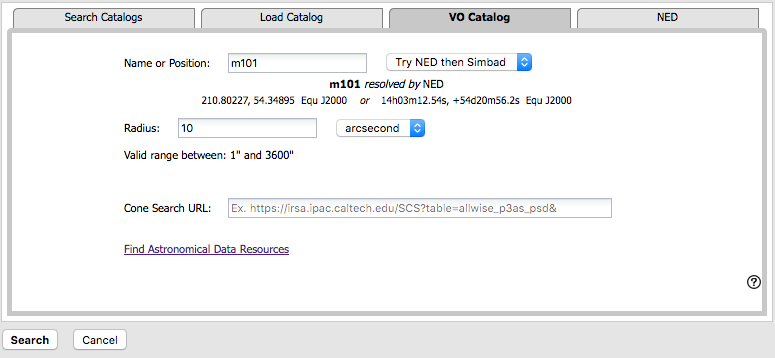

Contents of page/chapter:
+IRSA Catalogs -- Overlaying catalogs
from IRSA
+Catalogs from disk
+VO Catalogs
+NED Catalogs
The upper left of this window is where you specify which catalog you
want to search. To change catalogs, first select the "project" under
which they are housed at IRSA, such as 2MASS, IRAS, WISE, MSX, etc.
The available choices under the "category" and the specific clickable
catalog change according to the project you have selected. A short
description is provided for each of the catalogs, with links for more
information (including definitions of the sometimes cryptic column
names); an example is here:

The upper right of this window is where you specify the target (the position is pre-filled with its best guess as to what you want) and the search method (cone, elliptical, box, polygon, multi-object, all-sky), and the parameters that go with that search method (e.g., the radius of the cone). The parameters for each of these searches change dynamically as you select search options, as follows:


When you do a multi-position search on catalogs, three new columns are added to the catalog as it is returned to you. These columns are :
 Because this is an all-sky search, it
does not have a single target entry box. In order to constrain this
search, you need to impose constraints on the bottom of the screen
(see below).
Because this is an all-sky search, it
does not have a single target entry box. In order to constrain this
search, you need to impose constraints on the bottom of the screen
(see below).
Click on "Search" to initiate the search. It will load the catalog into a tab of its own. The objects will also be overlaid on any images you have loaded, and a default x-y plot will be shown. (For more on the x-y plots, see Plots section.) All of these representations are interlinked -- clicking on a row in the table shows it on the image and in the plot, and clicking on an object in the image shows it in the table and in the plot, and clicking on an object in the plot shows it in the table and on the image.
To close the catalog search window without searching for a catalog, click on "Cancel".
Tips and Troubleshooting.
By clicking on the blue "Catalogs" tab, you are by default dropped
into the interface for searching for catalogs at IRSA. However, you
can pick another tab from the top, "Load Catalog", to load your own
catalog, either from disk or from the IRSA Workspace  .
.
Your catalog needs to be in IPAC table format  , which is a varietal of plain text. IRSA has a table reformatting and validation service
, which is a varietal of plain text. IRSA has a table reformatting and validation service  which may be helpful, or you
can download just about any catalog you find through IRSA, and mimic
that format.
which may be helpful, or you
can download just about any catalog you find through IRSA, and mimic
that format.
Your table file MUST have RA and Dec values, and unless it is specified, it assumes J2000.
You can add a "SYMBOL" parameter to change the shape (X, SQUARE, CROSS, EMP_CROSS, DIAMOND, DOT) of catalog marks, e.g.:
\SYMBOL = X
You can add a "DEFAULT_COLOR" parameter to assign a CSS color name or a HEX value to catalog marks, e.g., either of these two:
\DEFAULT_COLOR = lightcyan \DEFAULT_COLOR = #00FF00You can find the CSS color code or the CSS color HEX values
By clicking on the blue "Catalogs" tab, you are by default dropped into the interface for searching for catalogs at IRSA. However, you can pick another tab from the center right, "VO Catalog", to search for and load catalogs from the VO.

As for the IRSA catalog search, the tool pre-fills the target position with the coordinates of the target with which you have been working. In this case, you are limited to a cone search, so the next option is the cone search radius. As usual, pick your units from the pulldown first, and then enter a number; if you enter a number and then select from the pulldown, it will convert your number from the old units to the new units. There are both upper and lower limits to your search radius; it will tell you if you request something too big or too small.
If you know your VO URL already, you can jump down to the Cone Search URL box and type or paste your URL into the box and hit search.
More commonly, however, users do not know a priori which URL to use. Click on "Find Astronomical Data Resources" to be droped into a VO search. Find the URL corresponding to the catalog you want, copy it, and go back and paste it in the URL box. The URL should not have the RA and Dec in it; the tool will add your RA and Dec as listed to the URL in the right syntax. Click on "Search" to initiate the search.
The search results are then shown (and interacted with) in the same way as the other catalogs described here.
Example
Load the tool. Search on IC1396. Go to the catalogs tab. Choose "VO
Catalog." It wants the root URL for a cone search. Click on "Find
Astronomical Data Resources", which goes here  . Search on IPHAS. Get this page
. Search on IPHAS. Get this page  .
Look for the complete catalog release (not just one associated with
one specific study). The name of the catalog goes here
.
Look for the complete catalog release (not just one associated with
one specific study). The name of the catalog goes here  . Hit
the [+] to expand it. There is one URL listed there, under "available
endpoints for the standard interface." Copy that URL and paste it into
the search form. The IRSA tool will append your coordinates and radius
and return you a table.
. Hit
the [+] to expand it. There is one URL listed there, under "available
endpoints for the standard interface." Copy that URL and paste it into
the search form. The IRSA tool will append your coordinates and radius
and return you a table.
Tips and Troubleshooting.
By clicking on the blue "Catalogs" tab, you are by default dropped into the interface for searching for catalogs at IRSA. However, you can pick another tab from the right, "NED", to search for and load a catalog from NED.

As for the other catalog searches, the tool pre-fills the target position with the coordinates of the target with which you have been working. In this case, you are limited to a cone search, so the next option is the cone search radius. As usual, pick your units from the pulldown first, and then enter a number; if you enter a number and then select from the pulldown, it will convert your number from the old units to the new units. There are both upper and lower limits to your search radius; it will tell you if you request something too big or too small.
The search results are then shown (and interacted with) in the same way as the other catalogs described here.